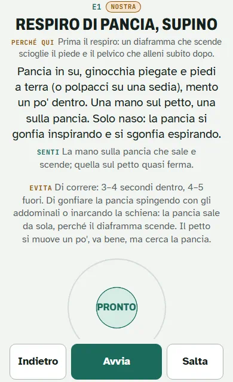

Percorso
Benessere
Per chi lavora seduto e non fa sport, o ne fa poco. Pochi minuti, a terra e alla scrivania.
Il tuo percorso, dalle tue risposte
Che cosa cambia
La base è la stessa per tutti: respiro, piedi, mobilità e tronco. Qui pesano di più:
Nel tuo piano, rispetto alla base:
- Ogni giorno un minuto su come stai seduto.
- Il lavoro di forza è facoltativo.
Una sessione tipo · 15 minuti
Fatta solo di pillole gratuite. È un esempio: nel Quaderno le sessioni seguono le 12 settimane e il tuo livello.
Prima leggi le pillole: ogni avviso vale anche qui.
Non riesco a caricare la sessione: controlla la connessione e ricarica la pagina.
Come si adatta a te
- Il percorso lo sceglie il tuo obiettivo: qui, stare bene alla scrivania, o trovare un momento di calma.
- Il livello (Inizio, Medio, Avanzato) dipende da quanto ti alleni oggi e da quello che riesci a fare nei test.
- Il tempo (Breve, Base, Pieno) lo scegli tu: circa 50, 90 o 125 minuti a settimana.
- L'accento è un tema solo alla volta, su cui si aggiungono pochi minuti. Lo indicano i test, in quest'ordine: Respiro, Anca, Spalle, Piede, Caviglia.
- Gli esercizi da togliere dipendono da quello che oggi riesci a fare, mai da una diagnosi.
I test non scelgono il programma e non trovano problemi: regolano dose e accento. Queste regole sono una prima versione: le rivediamo dopo i primi percorsi.
Che cosa sblocchi col codice
- Il programma di 12 settimane, in ordine; l'accento di questo percorso lo fissiamo insieme in videochiamata
- Quanto fare e quando salire, settimana per settimana, con le prove di fine blocco
- Il player, con tutte le sessioni
- Tutte le schede, con «Di più»: perché, dose, parole del coach
- Tutti i test, il diario e il «prima e dopo»
- Una persona: videochiamata di avvio, un controllo video a fine blocco, la chat
Il codice te lo do in videochiamata.
Questo percorso apre più avanti: nei primi mesi ne seguo al massimo due. Se ti interessa, scrivimi e ti avviso quando parte.
